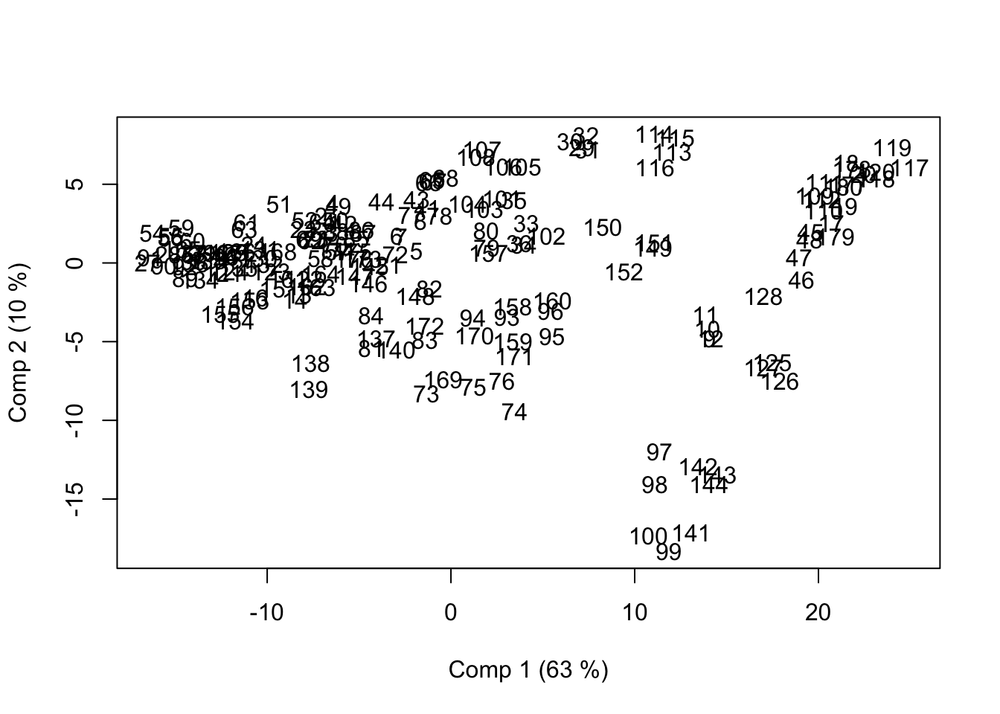
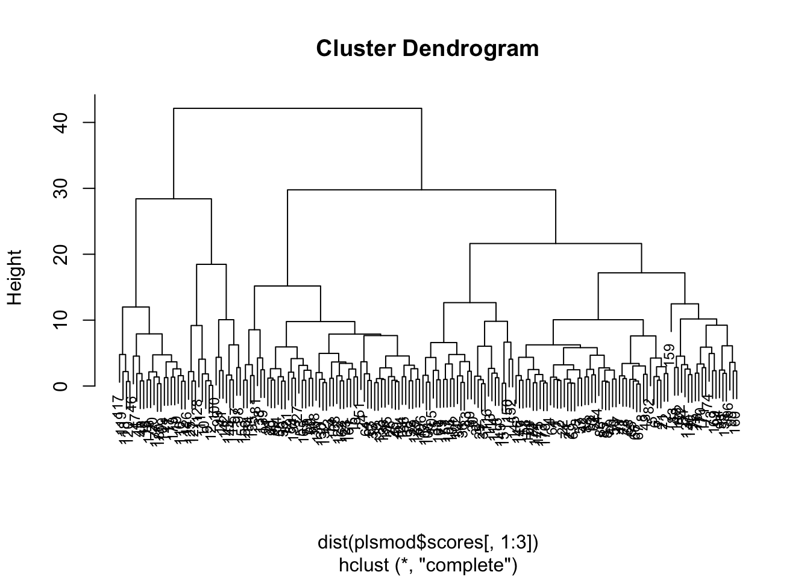

Exercise 7
Ex-1: Prediction of cow milk percentage
In this exercise we will study a data set used in the paper by Liland et al (2009) (http://www.sciencedirect.com/science/article/pii/S0169743909001476) were PLS-regression was used to predict the percentage of cow-milk in mixtures of cow, goat and ewe milk.
An excerpt from the paper explains why this is interesting:
“Quality assurance is an important issue in modern food production. The products are expected to have the right taste, smell, texture and appearance. In addition they should be safe, wholesome, authentic and have a composition that complies with regulations. As a practical example this paper will analyse data simulating milk adulteration. In real life such adulteration could occur where one type of milk is replaced by, or mixed with, another deliberately, by accident or because of failing routines.
There are several reasons why detection of the concentrations of cow, goat and ewe milk is of importance. Pure products of goat milk may be used as a supplement of milk for humans who are born with allergic reactions towards cow milk. Some mixed milk products are produced with regard to specifications which specify the mixture of milk from cow, goat and/or ewe. Professionals and consumers want to control the origin of milk in order to be sure that they get products following specifications and labelling. Farmers producing more than one type of milk might be tempted to add cow milk to goat or ewe milk as this would result in higher quantities of the better paid milk variants"
In the data file “maldidata.rdata” you find four objects:
Y: The percentage of cow-milk for 4 replicates of 45 different milk mixturesX: Mass Spectrometry data (MALDI-TOF) for the milk samples. The 6179 variables is a quantification of molecule “size” and “charge” in a sample. For simplicity we may say that the size of molecules increases from variable 1 to variable 6179. The measurements are then amounts of molecules of different sizes. The method is used to separate proteins, peptides and other ionizable compunds.Ytest: Cow-milk percentages for 45 extra test samplesXtest: TheMALDI-TOFvalues for the test samples.
You may plot the spectra in X by:
One-by-One:

or all together (takes a moment to plot):

The peaks show molecule sizes that are abundant in the sample.
- First run a PCA on
X. How many components are needed to explain 80% and 90% of the variability inX?
Importance of components:
PC1 PC2 PC3 PC4 PC5 PC6
Standard deviation 12.502 4.48331 3.02181 2.53728 2.01120 1.7430
Proportion of Variance 0.648 0.08333 0.03786 0.02669 0.01677 0.0126
Cumulative Proportion 0.648 0.73129 0.76914 0.79584 0.81260 0.8252
PC7 PC8 PC9 PC10 PC11 PC12
Standard deviation 1.30637 1.0875 1.05133 0.96666 0.91363 0.84363
Proportion of Variance 0.00708 0.0049 0.00458 0.00387 0.00346 0.00295
Cumulative Proportion 0.83228 0.8372 0.84176 0.84564 0.84910 0.85205
PC13 PC14 PC15 PC16 PC17 PC18
Standard deviation 0.83145 0.81638 0.80146 0.78302 0.75653 0.74396
Proportion of Variance 0.00287 0.00276 0.00266 0.00254 0.00237 0.00229
Cumulative Proportion 0.85491 0.85768 0.86034 0.86288 0.86525 0.86755
PC19 PC20 PC21 PC22 PC23 PC24
Standard deviation 0.72986 0.72352 0.71682 0.70165 0.68635 0.68112
Proportion of Variance 0.00221 0.00217 0.00213 0.00204 0.00195 0.00192
Cumulative Proportion 0.86976 0.87193 0.87406 0.87610 0.87805 0.87997
PC25 PC26 PC27 PC28 PC29 PC30
Standard deviation 0.67526 0.66960 0.66803 0.64452 0.6412 0.63550
Proportion of Variance 0.00189 0.00186 0.00185 0.00172 0.0017 0.00167
Cumulative Proportion 0.88187 0.88372 0.88557 0.88730 0.8890 0.89067
PC31 PC32 PC33 PC34 PC35 PC36
Standard deviation 0.63118 0.6211 0.61880 0.61289 0.60748 0.6018
Proportion of Variance 0.00165 0.0016 0.00159 0.00156 0.00153 0.0015
Cumulative Proportion 0.89233 0.8939 0.89551 0.89707 0.89860 0.9001
PC37 PC38 PC39 PC40 PC41 PC42
Standard deviation 0.59957 0.59745 0.58987 0.58556 0.58223 0.57872
Proportion of Variance 0.00149 0.00148 0.00144 0.00142 0.00141 0.00139
Cumulative Proportion 0.90159 0.90307 0.90452 0.90594 0.90734 0.90873
PC43 PC44 PC45 PC46 PC47 PC48
Standard deviation 0.57270 0.57009 0.56829 0.56415 0.56299 0.55657
Proportion of Variance 0.00136 0.00135 0.00134 0.00132 0.00131 0.00128
Cumulative Proportion 0.91009 0.91144 0.91278 0.91410 0.91541 0.91669
PC49 PC50 PC51 PC52 PC53 PC54
Standard deviation 0.55441 0.55249 0.55013 0.54621 0.54236 0.53944
Proportion of Variance 0.00127 0.00127 0.00125 0.00124 0.00122 0.00121
Cumulative Proportion 0.91797 0.91923 0.92049 0.92173 0.92295 0.92415
PC55 PC56 PC57 PC58 PC59 PC60
Standard deviation 0.53519 0.53392 0.53038 0.52837 0.52701 0.52362
Proportion of Variance 0.00119 0.00118 0.00117 0.00116 0.00115 0.00114
Cumulative Proportion 0.92534 0.92652 0.92769 0.92885 0.93000 0.93113
PC61 PC62 PC63 PC64 PC65 PC66
Standard deviation 0.52164 0.5154 0.5146 0.51075 0.50803 0.50581
Proportion of Variance 0.00113 0.0011 0.0011 0.00108 0.00107 0.00106
Cumulative Proportion 0.93226 0.9334 0.9345 0.93554 0.93661 0.93767
PC67 PC68 PC69 PC70 PC71 PC72
Standard deviation 0.50305 0.50060 0.49479 0.4904 0.48717 0.48528
Proportion of Variance 0.00105 0.00104 0.00101 0.0010 0.00098 0.00098
Cumulative Proportion 0.93872 0.93976 0.94078 0.9418 0.94276 0.94373
PC73 PC74 PC75 PC76 PC77 PC78
Standard deviation 0.48157 0.47981 0.47502 0.47299 0.46736 0.4655
Proportion of Variance 0.00096 0.00095 0.00094 0.00093 0.00091 0.0009
Cumulative Proportion 0.94470 0.94565 0.94658 0.94751 0.94842 0.9493
PC79 PC80 PC81 PC82 PC83 PC84
Standard deviation 0.46270 0.46029 0.45732 0.45434 0.45185 0.44991
Proportion of Variance 0.00089 0.00088 0.00087 0.00086 0.00085 0.00084
Cumulative Proportion 0.95020 0.95108 0.95195 0.95281 0.95365 0.95449
PC85 PC86 PC87 PC88 PC89 PC90
Standard deviation 0.44596 0.44150 0.4392 0.43659 0.43298 0.43008
Proportion of Variance 0.00082 0.00081 0.0008 0.00079 0.00078 0.00077
Cumulative Proportion 0.95532 0.95612 0.9569 0.95771 0.95849 0.95926
PC91 PC92 PC93 PC94 PC95 PC96
Standard deviation 0.42631 0.42429 0.42329 0.42076 0.41632 0.41304
Proportion of Variance 0.00075 0.00075 0.00074 0.00073 0.00072 0.00071
Cumulative Proportion 0.96001 0.96076 0.96150 0.96223 0.96295 0.96366
PC97 PC98 PC99 PC100 PC101 PC102
Standard deviation 0.41239 0.4099 0.40814 0.40579 0.40288 0.40032
Proportion of Variance 0.00071 0.0007 0.00069 0.00068 0.00067 0.00066
Cumulative Proportion 0.96437 0.9651 0.96575 0.96644 0.96711 0.96777
PC103 PC104 PC105 PC106 PC107 PC108
Standard deviation 0.39830 0.39665 0.39492 0.39189 0.39021 0.38745
Proportion of Variance 0.00066 0.00065 0.00065 0.00064 0.00063 0.00062
Cumulative Proportion 0.96843 0.96908 0.96973 0.97037 0.97100 0.97162
PC109 PC110 PC111 PC112 PC113 PC114
Standard deviation 0.38632 0.38379 0.38268 0.3806 0.37875 0.37773
Proportion of Variance 0.00062 0.00061 0.00061 0.0006 0.00059 0.00059
Cumulative Proportion 0.97224 0.97285 0.97346 0.9741 0.97465 0.97524
PC115 PC116 PC117 PC118 PC119 PC120
Standard deviation 0.37614 0.37361 0.36939 0.36727 0.36596 0.36319
Proportion of Variance 0.00059 0.00058 0.00057 0.00056 0.00056 0.00055
Cumulative Proportion 0.97583 0.97641 0.97697 0.97753 0.97809 0.97864
PC121 PC122 PC123 PC124 PC125 PC126
Standard deviation 0.36144 0.35951 0.35838 0.35604 0.35339 0.34950
Proportion of Variance 0.00054 0.00054 0.00053 0.00053 0.00052 0.00051
Cumulative Proportion 0.97918 0.97971 0.98025 0.98077 0.98129 0.98179
PC127 PC128 PC129 PC130 PC131 PC132
Standard deviation 0.3485 0.3466 0.34274 0.34143 0.33990 0.33821
Proportion of Variance 0.0005 0.0005 0.00049 0.00048 0.00048 0.00047
Cumulative Proportion 0.9823 0.9828 0.98328 0.98377 0.98425 0.98472
PC133 PC134 PC135 PC136 PC137 PC138
Standard deviation 0.33513 0.33150 0.32945 0.32701 0.32469 0.32042
Proportion of Variance 0.00047 0.00046 0.00045 0.00044 0.00044 0.00043
Cumulative Proportion 0.98519 0.98564 0.98609 0.98653 0.98697 0.98740
PC139 PC140 PC141 PC142 PC143 PC144
Standard deviation 0.31923 0.31695 0.31344 0.3102 0.30820 0.30597
Proportion of Variance 0.00042 0.00042 0.00041 0.0004 0.00039 0.00039
Cumulative Proportion 0.98782 0.98824 0.98864 0.9890 0.98944 0.98982
PC145 PC146 PC147 PC148 PC149 PC150
Standard deviation 0.30490 0.30139 0.29943 0.29712 0.29419 0.29282
Proportion of Variance 0.00039 0.00038 0.00037 0.00037 0.00036 0.00036
Cumulative Proportion 0.99021 0.99059 0.99096 0.99132 0.99168 0.99204
PC151 PC152 PC153 PC154 PC155 PC156
Standard deviation 0.29097 0.28744 0.28654 0.28428 0.28340 0.27948
Proportion of Variance 0.00035 0.00034 0.00034 0.00034 0.00033 0.00032
Cumulative Proportion 0.99239 0.99273 0.99307 0.99341 0.99374 0.99406
PC157 PC158 PC159 PC160 PC161 PC162
Standard deviation 0.27619 0.27450 0.27344 0.2704 0.2689 0.26642
Proportion of Variance 0.00032 0.00031 0.00031 0.0003 0.0003 0.00029
Cumulative Proportion 0.99438 0.99469 0.99500 0.9953 0.9956 0.99590
PC163 PC164 PC165 PC166 PC167 PC168
Standard deviation 0.26437 0.26064 0.25931 0.25591 0.25432 0.25173
Proportion of Variance 0.00029 0.00028 0.00028 0.00027 0.00027 0.00026
Cumulative Proportion 0.99619 0.99647 0.99675 0.99702 0.99729 0.99755
PC169 PC170 PC171 PC172 PC173 PC174
Standard deviation 0.24955 0.24744 0.24511 0.24292 0.23712 0.23583
Proportion of Variance 0.00026 0.00025 0.00025 0.00024 0.00023 0.00023
Cumulative Proportion 0.99781 0.99806 0.99831 0.99856 0.99879 0.99902
PC175 PC176 PC177 PC178 PC179
Standard deviation 0.23060 0.22685 0.22259 0.21212 0.19166
Proportion of Variance 0.00022 0.00021 0.00021 0.00019 0.00015
Cumulative Proportion 0.99924 0.99946 0.99966 0.99985 1.00000
PC180
Standard deviation 0.00000000000000235
Proportion of Variance 0.00000000000000000
Cumulative Proportion 1.00000000000000000We need 5 components to explain 80% and 36 to explain 90%. Hopefully we do not need to use all X-information to predict Y.
- Compute the correlations between \(Y\) and the principal components. How can you use this get an idea of how many components PLS-regression will require to make a good model for cow-milk prediction?
PC1 PC2 PC3 PC4 PC5 PC6
[1,] 0.5282887 -0.7537702 0.03383417 -0.2250967 0.07440021 -0.050276
PC7 PC8 PC9 PC10 PC11 PC12
[1,] 0.0150393 -0.1656208 -0.007569666 -0.0754223 -0.1365365 -0.04318635
PC13 PC14 PC15 PC16 PC17 PC18
[1,] 0.01833581 0.01665996 -0.01545572 -0.02629766 0.02219768 -0.01873644
PC19 PC20 PC21 PC22 PC23
[1,] -0.004954056 -0.04133758 0.006487258 -0.01874077 -0.04420428
PC24 PC25 PC26 PC27 PC28
[1,] -0.006899854 -0.04110336 0.004122647 -0.01226996 0.01698066
PC29 PC30 PC31 PC32 PC33 PC34
[1,] -0.01472012 0.03866793 0.0006183768 0.01852025 -0.0213186 0.04777714
PC35 PC36 PC37 PC38 PC39
[1,] -0.009640993 -0.01055468 -0.005027939 0.02095968 -0.01101386
PC40 PC41 PC42 PC43 PC44 PC45
[1,] -0.008739908 -0.01910303 -0.01403824 0.0081989 -0.01239098 0.0175803
PC46 PC47 PC48 PC49 PC50
[1,] 0.005968477 0.01408276 -0.01929257 0.02167754 -0.00107033
PC51 PC52 PC53 PC54 PC55
[1,] -0.004538278 0.007807648 0.006737832 -0.004095661 0.002704891
PC56 PC57 PC58 PC59 PC60
[1,] -0.004040486 -0.02687466 0.005213355 -0.004714854 -0.0005855282
PC61 PC62 PC63 PC64 PC65 PC66
[1,] 0.01240884 -0.01415087 0.0124614 -0.01805413 -0.007655923 0.002764712
PC67 PC68 PC69 PC70 PC71
[1,] 0.01456288 -0.02207951 -0.002453118 -0.003848137 -0.003343055
PC72 PC73 PC74 PC75 PC76
[1,] -0.004034935 -0.03796665 -0.03938474 0.007020675 0.01030672
PC77 PC78 PC79 PC80 PC81
[1,] -0.01699946 -0.01035674 -0.01159898 -0.008952226 0.006640257
PC82 PC83 PC84 PC85 PC86 PC87
[1,] -0.007161444 0.008595261 -0.02049167 -0.0217142 0.01803896 0.02837337
PC88 PC89 PC90 PC91 PC92
[1,] 0.006726205 0.01657023 0.004445855 -0.006956301 -0.01087622
PC93 PC94 PC95 PC96 PC97 PC98
[1,] -0.00113085 0.02443427 0.03041671 -0.01861646 -0.003882029 0.02139643
PC99 PC100 PC101 PC102 PC103
[1,] -0.007068423 -0.002379111 0.0002831574 0.02506361 -0.007573581
PC104 PC105 PC106 PC107 PC108 PC109
[1,] -0.01748087 -0.02588017 0.02444957 -0.02602153 0.00271879 -0.01570387
PC110 PC111 PC112 PC113 PC114 PC115
[1,] 0.01418877 -0.01153658 -0.009002262 -0.0115408 0.02989033 0.009244466
PC116 PC117 PC118 PC119 PC120
[1,] 0.002463251 -0.01004417 -0.00906929 -0.02419253 0.005161842
PC121 PC122 PC123 PC124 PC125 PC126
[1,] -0.0065995 0.01469365 0.004668753 -0.02539656 -0.02236522 -0.01235845
PC127 PC128 PC129 PC130 PC131
[1,] 0.008160952 0.01009865 -0.01423243 -0.01190733 -0.0001797449
PC132 PC133 PC134 PC135 PC136
[1,] -0.01077575 -0.00171661 0.002751793 -0.006353652 0.01025625
PC137 PC138 PC139 PC140 PC141
[1,] -0.008700718 0.005517349 0.007418038 -0.008046314 -0.003271586
PC142 PC143 PC144 PC145 PC146
[1,] 0.01592453 -0.001092543 0.002911843 -0.003775066 -0.001475013
PC147 PC148 PC149 PC150 PC151
[1,] -0.007356669 -0.006561469 0.003542154 -0.005788942 0.003402721
PC152 PC153 PC154 PC155 PC156 PC157
[1,] 0.002515702 0.001500009 -0.00918038 -0.01106579 0.02320501 0.01080684
PC158 PC159 PC160 PC161 PC162
[1,] -0.007336685 -0.001484081 0.005028354 -0.002423504 -0.005832478
PC163 PC164 PC165 PC166 PC167
[1,] -0.007009756 0.005582993 -0.003444765 0.004363855 0.003676115
PC168 PC169 PC170 PC171 PC172
[1,] 0.005293779 -0.0150235 -0.009197677 -0.01335412 -0.009331149
PC173 PC174 PC175 PC176 PC177
[1,] -0.002554266 0.01128622 0.0002403935 -0.00041784 -0.005701346
PC178 PC179 PC180
[1,] -0.01030182 0.0217922 0.02875971Components 1, 2, 4 and perhaps 8 are moderately to highly correlated with Y. Supposedly 3 to 4 components will be necessary for PLSR.
- Fit a PLS-regression model using
Yas response andXas predictor (You may simply writeY ~ Xas your model call inplsr. Also usencomp=10as extra argument to only fit 1 to 10 components). Use thescoreplot()function to make a scoreplot. Check the help-file for this function to see how you can chose the component numbers to plot, and how you can put labels to your observations. Plot component 1 against 2 and put observation numbers 1:180 as labels. If the noise level of the measurements is low, the replicates should group in clusters of size four (obs 1,2,3 and 4 are from the same mixture, and so on). Do you see any tendency to this?

We observe that there are clusters of observations and that there is a tendency of successive numbers to be close in the scoreplot. Cluster sizes are difficult to determine.
- Perform hierarchical clustering of the samples using the 3 first PLS-component scores as input variables. Try both “complete” and “average” agglomeration method and make a dendrogram. Are the replicate clusters more apparent in the dendrogram than in the scoreplot? Is there any samples that are very different from all others?

From the dendrogram we observe several clusters of size four, and some of three with successive observation numbers. This implies that the replicates are more similar to each other than samples from different milk samples. Sample 159 seems to be an outlier, very different from all others.
- Use K-means clustering with K=45 on the three first PLS-component scores. How do the replicates cluster?
1 2 3 4 5 6 7 8 9 10 11 12 13 14 15 16 17 18
39 39 39 39 13 13 13 44 20 20 20 20 31 31 31 31 38 15
19 20 21 22 23 24 25 26 27 28 29 30 31 32 33 34 35 36
38 15 13 1 1 40 25 25 14 17 2 2 2 2 22 32 22 32
37 38 39 40 41 42 43 44 45 46 47 48 49 50 51 52 53 54
25 17 25 25 44 23 9 34 3 3 3 3 11 11 19 23 17 24
55 56 57 58 59 60 61 62 63 64 65 66 67 68 69 70 71 72
24 24 30 30 14 14 40 23 40 39 9 9 9 9 1 30 1 13
73 74 75 76 77 78 79 80 81 82 83 84 85 86 87 88 89 90
12 45 45 45 44 44 33 22 5 13 12 35 34 34 34 23 14 17
91 92 93 94 95 96 97 98 99 100 101 102 103 104 105 106 107 108
17 17 6 6 28 28 42 42 42 42 22 32 43 43 7 7 7 7
109 110 111 112 113 114 115 116 117 118 119 120 121 122 123 124 125 126
38 38 38 38 4 4 4 4 37 37 37 37 41 8 8 41 29 29
127 128 129 130 131 132 133 134 135 136 137 138 139 140 141 142 143 144
29 26 25 16 16 16 25 41 25 25 35 5 5 35 42 42 42 42
145 146 147 148 149 150 151 152 153 154 155 156 157 158 159 160 161 162
21 21 21 21 36 36 36 36 18 18 18 18 33 6 27 28 8 8
163 164 165 166 167 168 169 170 171 172 173 174 175 176 177 178 179 180
8 30 14 41 41 16 12 45 45 35 10 30 10 10 15 15 3 15 Many replicates fall into the same clusters, but some clusters observations from more than one “true” cluster. E.g. cluster number 43 contains observations (97, 98, 99, 100) and (141, 142, 143, 144), which is a mixture of four true replica clusters. We conclude that the replicates are somewhat similar, but there is some noise in the MALDI-TOF data which makes similar milk mixtures hard to distinguish.
- We will use cross-validation to estimate the expected prediction error of PLSR and to choose the appropriate number of components. Instead of using Leave-One-Out Cross-validation we will exclude all four replicates in a “Leave-Four-Out” type of Cross-validation. Why is this smart?
Since the replicates are from the same mixture, they are not independent. If we use Leave-One-Out CV the three replicates still contained in the training set will make the model “too good” to predict the given mixture, and we will under-estimate the prediction error of new samples.
- Refit the plsmodel from exercise c. but add the arguments
validation="CV",segments=45andsegment.type="consecutive"in the plsr-model call. This sets up the “Leave-Four-Out” CV to be performed.
- The sum of squared prediction errors (PRESS) for different number of components is given in the
validation$PRESSelement of the fitted pls-model. The null-model PRESS (prediction using the mean-response) is given in thevalidation$PRESS0element. You find the MSEP-values (Mean Squared Error of Prediction) by dividing the PRESS by the number of observations (N=180). Make a prediction error plot of MSEP with 0 to 10 components. How many components do you think gives satisfying prediction of cow-milk content in new mixtures? Remember that simple models are often better than complex.

The prediction error is heavily reduced as we introduce components 1 and 2, but there is a small gain by adding components 3, 4 and 5. Simple models are usually more robust, so I would not go any further than 5 components here.
- Predict the cow-milk content of the test samples using
Xtestas newdata in thepredict-function and use the number of components you found as best from the previous exercise. Save the predictions into an object calledpred. (See?predict.mvrfor the help-file to predict for pls-objects.). The predict-function returns an array of dimension [45,1,1] of predictions. You can extract all predictions bypred[,1,1].
Copy the folowing code into R and execute:
- Use
MSEPfunc()to compute the MSEP-value for the test-predictions usingYtestand the predicted values as inputs. Did the cross-validation under-estimate the prediction error?
[1] 0.006919722The MSEP-value is slightly larger than the value found for five components using Cross-validation, but the order of magnitude is the same.
- EXTRA for those interested. Redo the exercises g. and h. with Leave-One-Out CV. (See also lecture notes Lesson 7.) Compare the MSEP-values you find with the previous CV-routine.

We see that LOO-CV underestimates the prediction error, as commented in exercise f.